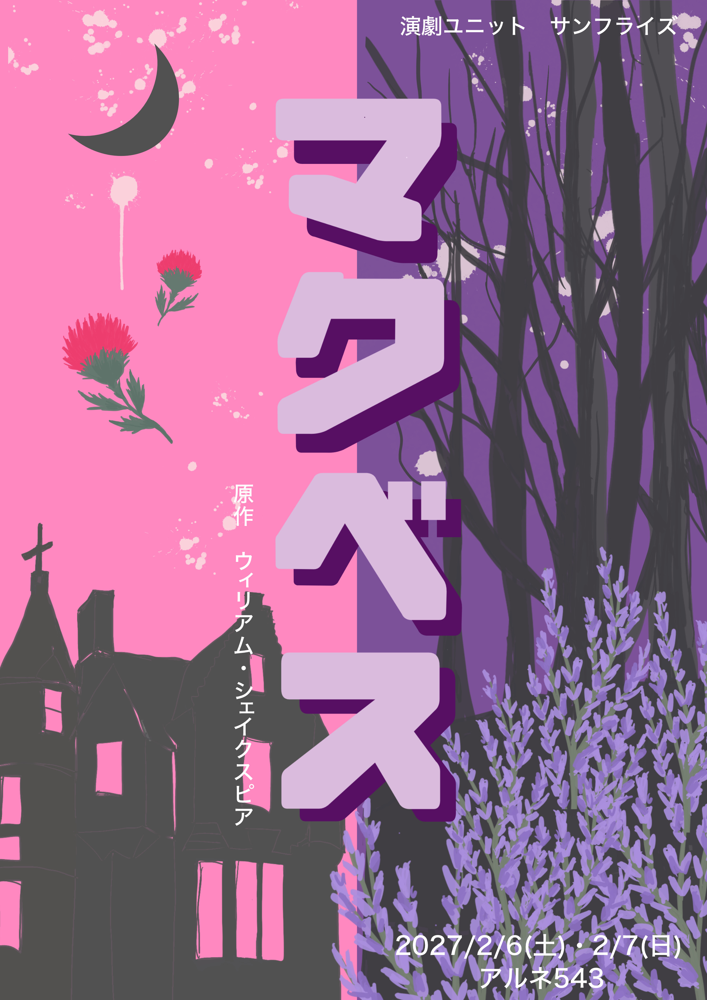

01 / STORY
なぜ、すべてが
壊れていくのか。
戦の英雄でありながら、何か満たされないマクベスは、
魔女の予言をきっかけに王を殺し、王冠を奪う。
しかし、偽りによって手にした地位も、人の心も、
少しずつ彼の手からこぼれ落ちていく。
なぜ、すべてが壊れていくのか。
その理由さえ分からぬまま、
マクベスは破滅へと突き進んでいく。
ふたつのチームでお届けする、シェイクスピアの悲劇。
SUNFRISE THEATRE PRESENTS
その予言が、すべてを変える。
原作 ウィリアム・シェイクスピア
翻訳 小田島雄志 ／ 構成・演出 小川友子
アルネ543 東京・富士見台

THE OFFICIAL FLYER ↗01 / STORY
戦の英雄でありながら、何か満たされないマクベスは、
魔女の予言をきっかけに王を殺し、王冠を奪う。
しかし、偽りによって手にした地位も、人の心も、
少しずつ彼の手からこぼれ落ちていく。
なぜ、すべてが壊れていくのか。
その理由さえ分からぬまま、
マクベスは破滅へと突き進んでいく。
ふたつのチームでお届けする、シェイクスピアの悲劇。
02 / INFORMATION
14:30 アザミ
19:00 ヒース
13:00 ヒース
17:00 アザミ
上演時間：約90分（予定）
開場は各回開演の30分前です。
2,500円 ＋ ドリンク代100円
リピート割：1,000円 ＋ ドリンク代100円
アルネ543
東京都練馬区貫井3-5-6 ドンズビルB1F
西武池袋線 富士見台駅南口より徒歩2分
03 / JOURNAL
ふたつの国の概要と、『マクベス』につながる歴史。
日程、会場、ふたつのチームについて。